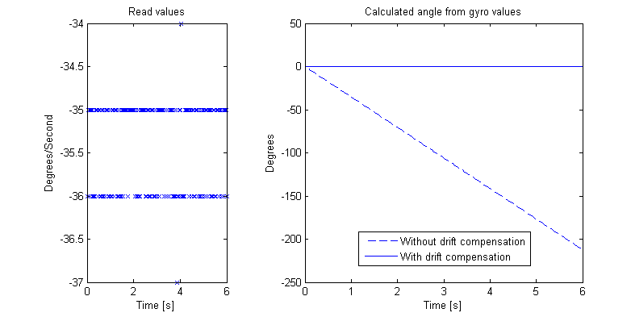

Our analysis so far has revealed a very simple way of controlling the inverted pendulum to balance around its upright equilibrium: we should simply generate a force which is proportional to the angular deviation and rate of deviation
This balancing act requires three essential steps
Measuring, or sensing, the angle and the angular rate .
Computing the desired control action
Generating, or actuating, the required torque
This sensing-computing-actuating chain of operations, illustrated in the figure below, can be found in all control systems. The quality of the sensors, control algorithms and actuators all influence if, and how well, we can control a given physical object.
For the inverted pendulum, there are many possible ways of sensing the angle; many control algorithms that can stabilize the pendulum; and many ways of generating the appropriate torque. Let’s go through some of our options before we start developing our physical system and control solution.
Sensors
The angle could be measured by digital encoders at its base, or be computed by integrating measurements of the rate-of-change . The angular rate-of-change , in turn, can be measured by a gyro sensor, or be computed by integrating a measurement of its acceleration. Finally, the acceleration can be measured by an accelerometer. Let’s describe these solutions in some more detail.
Digital encoders
The motors in the LEGO mindstorm kit have built in encoders that give a digital value of the angle of the motors. Thus, if a motor is used to generate the required torque, it can also be used to give information about the angle at the base of the pendulum.
Gyro sensor
A gyro sensor gives the rate of rotation . Here we are also using a HiTechnic Gyro Sensor which can give the rotation of up to  degrees per second.
degrees per second.
A problem with gyro sensors is that they have a little bit of offset, i.e. the gyro always shows a non-zero value even if the velocity is zero. This problem is more pronounced when we integrate the gyro readings to estimate the true angle, since the offset in the angle estimates will increase linearly with time. Thus, to give a proper velocity reading the gyro has to be calibrated. A common (and very simple) way of doing this is to compute the offset prior to operation and then subtracting this value from the gyro readings. The offset can be measured by keeping the gyro stable for a couple of seconds and averaging the readings. See below for the raw values, integration of these and the drift when not taken care of.

Accelerometer/Tilt sensor
The accelerometer sensor from HiTechnic can estimate the acceleration in  , and directions. The tilt could potentially be calculated by looking at how much the value of the gravitational acceleration differs from the measured acceleration in one direction. However, as shown below, the raw accelerometer reading is very noisy and must be filtered prior to use.
, and directions. The tilt could potentially be calculated by looking at how much the value of the gravitational acceleration differs from the measured acceleration in one direction. However, as shown below, the raw accelerometer reading is very noisy and must be filtered prior to use.
Evaluating sensor quality
The figure below shows angular measurement from a real pendulum. Each of the three sensor solutions have its own problems. The digital encoder is mesuring the angle at the base. Since the pendulum in this case is not completely stiff, the measurments get distorted each time the pendulum changes direction.
The problem with the gyro solution is that since the angle estimate is obtained by integration and hence does not react to fast changes as quickly as the other sensors. But the positive side is that the sensor has high accuracy and very little noise.
As for the accelerometer, it reacts quickly to changes but is very noisy.
Computing the control signal
All computations take place in the LEGO NXT embedded computer. The controller program will repeatedly read the sensors, compute the desired control signal, and command the motors to generate the required torque. We will devote a complete section to programming later in this tutorial, so let’s skip this for now.
Actuators
The only actuators that we have at our command are the motors that come with the Mindstorm kit. The motors can be commanded to generate of maximum power. The power is assumed to be proportional to the torque by some unknown constant, which needs to be estimated or tuned by trial and error [continue »].